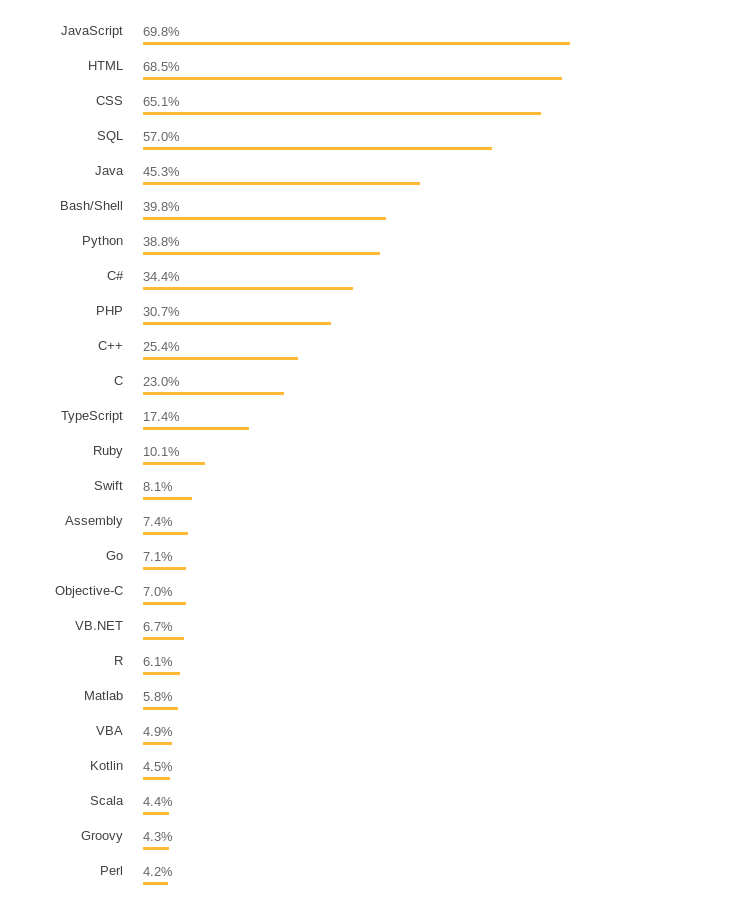

<!doctype html>
<html lang="sv">
<meta charset="utf-8" />
<title>webapp kmom01</title>

<!-- Mithril HTML Slideshow styles -->
<link href="../css/mithril-slideshow.css" rel="stylesheet" />

<!-- Code formatting using highlight.js -->
<link rel="stylesheet" href="../css/default.css">
<link rel="stylesheet" href="../css/tomorrow.css">
<script src="../js/highlight.pack.js"></script>

<!-- Text formatting using Markdown through showdown.js -->
<script src="../js/showdown.min.js"></script>


<!-- Here comes the slides in order -->
<script data-role="slide" data-markdown type="text/html">
# webapp kmom01
## JavaScript och DOM
### Emil Folino, dbwebb
</script>


<!-- Slide -->
<script data-role="slide" data-markdown type="text/html">
#Agenda

* JavaScript
* Document Object Model

</script>


<!-- Slide -->
<script data-role="slide" data-markdown type="text/html">
# JavaScript på 8 minuter

* Utvecklades under 6 månader 1995 av främst Brendan Eich.

* Som en del av Netscape Navigator.

* Designat som ett alternativ till Java applets i webbläsaren. En annan användergrupp: designers och amatörer.


</script>


<!-- Slide -->
<script data-role="slide" data-markdown type="text/html">
# JavaScript på 8 minuter

* Java-like syntax

* Prototype-based Object Model

* Functions as First-Class Objects

</script>


<!-- Slide -->
<script data-role="slide" data-markdown type="text/html">
# JavaScript på 8 minuter

* ECMAScript

* 5, 6, 7, 2015, 2016, 2018 ?????

</script>


<!-- Slide -->
<script data-role="slide" data-markdown type="text/html">
# JavaScript på 8 minuter



</script>


<!-- Slide -->
<script data-role="slide" data-markdown type="text/html">
# Document Object Model

* Trädstruktur

* Varje HTML element är en nod som kan ha barn.

* JavaScript kan lägga till, ta bort och ändra alla noder.

* JavaScript kan lyssna på och skapa nya DOM events.

```
<!doctype html>
<html>
<head>
    <meta charset="utf-8">
    <meta name="viewport" content="width=device-width, initial-scale=1, shrink-to-fit=no">
    <title>Me-app</title>
</head>
<body>
    <div id="root">
        <p class="super-paragraph">Hello World!</p>
    </div>
</body>
</html>
```


</script>


<!-- Slide -->
<script data-role="slide" data-markdown type="text/html">
# Document Object Model och JavaScript

```
<body>
    <div id="root"></div>
</body>
```

```
var root = document.getElementById("root");

var newElement = document.createElement("p");
newElement.textContent = "Hello World!";
newElement.className = "super-paragraph";

root.appendChild(newElement);
```

</script>


<!-- Slide -->
<script data-role="slide" data-markdown type="text/html">
#Avslutningsvis

* Frågor på det?

</script>


<!-- Slide -->
<script data-role="slide" data-markdown type="text/html">
</script>


<!-- include essential js-script -->
<script src="../js/mithril.min.js"></script>
<script src="../js/mithril-slideshow.js"></script>
